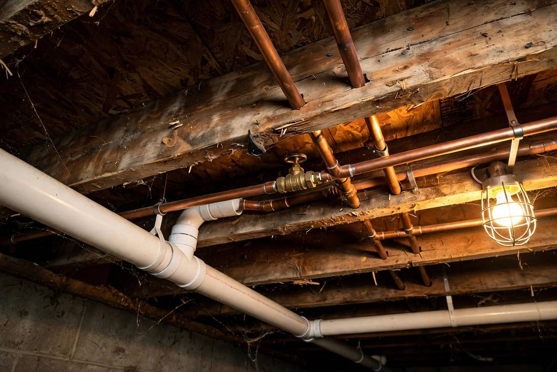
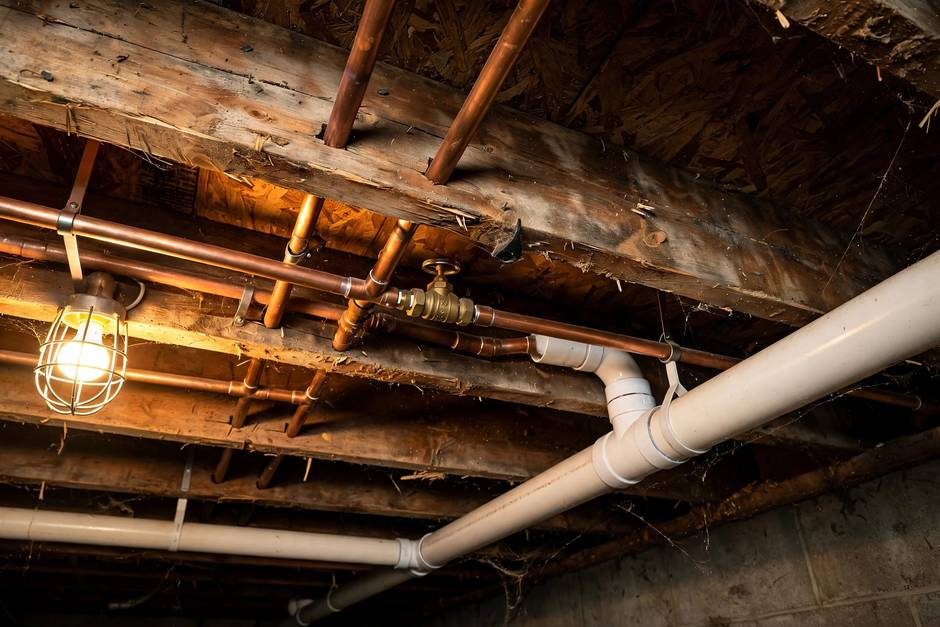
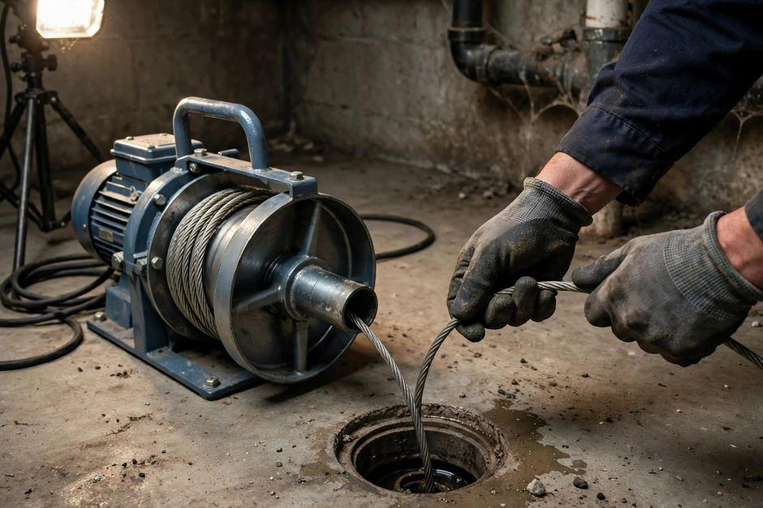

Residential Plumbing Hub
Residential Plumber in Belleville, IL
Residential plumbing covers the systems a household uses every day, including kitchens, bathrooms, laundry rooms, water heaters, and whole-home piping. Housing age and layout shape how those systems behave in Belleville, IL. Hinkle Plumbing Company assesses home plumbing as connected systems, starting with plumbing repairs for everyday faults.
1610 W Main St, Belleville, IL 62220Monday through Friday, 8:00 AM to 4:30 PM(618) 677-6556
What This Hub Covers
Residential Systems Covered
Residential scope covers the rooms and systems that make up home plumbing in Belleville, IL. Each area below is assessed on household use patterns and housing context, and detailed pages explain system-specific work where needed.
Kitchen Plumbing
Kitchen plumbing covers sinks, faucets, disposals, dishwashers, supply lines, and drains serving food preparation and cleanup. Fixture condition, drain behavior, and supply patterns are reviewed together for the room.
Bathroom Plumbing
Bathroom plumbing covers toilets, sinks, tubs, showers, faucets, and drains serving daily routines. Fixture wear, drain behavior, and water use patterns shape assessment for each bathroom in the home.
Laundry Room Plumbing
Laundry plumbing covers washer supply lines, drain standpipes, utility sinks, and shutoff control. Hose condition, drain flow, and shutoff operation are reviewed, because laundry faults can release large volumes of water.
Water Heater Systems
Water heater systems cover tank heaters serving household hot water needs. Heater condition, recovery observations, and piping layout are reviewed, and repair against replacement discussion reflects household demand patterns.
Whole-Home Piping
Whole-home piping covers supply and drain runs that connect rooms through walls, ceilings, and below-grade spaces. Material, joint condition, and access findings shape repair and replacement planning for the home.
Outdoor Taps and Hose Bibbs
Outdoor taps cover hose bibbs and exterior supply points used for yards and outdoor cleaning. Freeze context, shutoff control, and leak findings are reviewed, and exterior piping condition shapes seasonal discussion.
About Hinkle Plumbing Company
Residential Work From a Belleville Base
Hinkle Plumbing Company assesses residential plumbing for Belleville homes from its office on West Main Street. Household routines, housing age, and room layouts shape each assessment, and scope is discussed before work begins.
Homes in Belleville span a wide range of building eras, from nineteenth-century brick houses to newer subdivisions, and pipe materials follow those eras. In homes from earlier building eras, expect galvanized supply piping and cast-iron drains, and check material during assessment rather than assuming a single pipe type. Hinkle Plumbing Company reviews home systems in that era context, and drain cleaning findings help where drain patterns span several rooms.
How we workImage showing residential kitchen and bathroom plumbing in a Belleville home.
How Assessment Works
Residential Assessment Steps
The steps flex with the condition of the job, but the sequence stays the same.
Discuss Household Routines
Bathroom use, kitchen use, laundry patterns, and hot water demand are discussed to understand system load. Routine details help separate isolated fixture faults from capacity or piping concerns affecting the home.
Review Room by Room
Kitchens, bathrooms, laundry rooms, and heater areas are reviewed for fixture condition, drain behavior, and leak signs. Findings are noted by room, because home concerns often span more than one space.
Review Piping and Shutoffs
Visible piping, shutoff locations, and meter context are reviewed for material, condition, and control. Piping findings shape repair planning, and shutoff control supports sequenced work across rooms.
Plan by System
Each system is planned on its own findings, with kitchen, bathroom, laundry, heater, and piping scopes kept distinct. Detailed service pages explain system-specific work, and the overall plan reflects combined findings.
Check Household Function
After work, fixture operation, drain flow, and hot water function are checked where relevant. Findings are discussed with household members, and maintenance observations are shared for ongoing home care.
Approaches
Residential Plumbing Approaches
Residential approaches reflect household routines, housing age, and room layouts. Methods below are discussed during assessment, and suitability is confirmed for the specific home rather than assumed from a standard layout.
Fixture Assessment
Fixture assessment reviews toilets, sinks, tubs, showers, and faucets for wear, leaks, and operation. Fixture condition guides repair against replacement discussion, and parts findings shape scope for each fixture.
Drain Pattern Review
Drain pattern review compares slowing, gurgling, and odor findings across rooms. Pattern comparison separates trap faults from branch or main-line concerns, and camera findings shape method selection where needed.
Supply Pattern Review
Supply pattern review compares pressure, discoloration, and flow findings across fixtures. Pattern comparison separates single-fixture supply faults from piping or service-line concerns affecting the home.
Heater Demand Review
Heater demand review compares hot water use patterns with heater recovery and condition observations. Demand findings shape repair against replacement discussion, and household size context informs the conversation.
Era-Based Pipe Review
Era-based pipe review uses building age context to guide material expectations and checks. Galvanized, copper, cast-iron, clay, and plastic piping each present differently, and material findings shape repair planning.
Seasonal Preparation Discussion
Seasonal discussion covers freeze context for exterior taps and unconditioned piping, plus wet-condition context for below-grade systems. Preparation observations are shared in general terms during assessment visits.
Checks before handoff
The work is checked before the visit ends, and what was done is reviewed with you.
Common Patterns
Common Residential Plumbing Patterns
Residential concerns often appear as daily-use frustrations that point to fixture, drain, or heater patterns. The patterns below describe common reasons for assessment, without describing a specific property or job.

Morning Hot Water Running Short
A common call describes hot water running short during household routines, with heater recovery and demand patterns in question. Assessment reviews heater condition, household use patterns, and piping layout to separate heater faults from demand context. Repair against replacement discussion reflects the combined findings, and fixture flow patterns are reviewed alongside heater observations. Observations from assessment are shared, and scope reflects the combined findings for the space.
Laundry Drain Overflowing During Cycles
A common call describes a laundry drain that overflows or drains slowly during washer cycles, with standpipe and drain behavior in question. Assessment reviews drain flow, standpipe condition, and branch drain patterns to narrow the cause. Clearing method reflects blockage findings, and washer hose and shutoff condition are reviewed alongside drain findings. Findings are reviewed together before repair scope is discussed for the home.
Signs to Note
Residential Signs That Call for Assessment
Most calls fall into a few patterns. Knowing which pattern applies decides what the visit involves.
Kitchen Drain Slowing
Kitchen drain slowing can reflect grease, food debris, or branch drain findings. Drain patterns and disposal findings are reviewed together, and clearing method reflects blockage material and pipe condition. Findings guide the next steps.
Bathroom Fixture Wear
Toilet, faucet, and shower wear often appears together in well-used bathrooms. Fixture patterns across bathrooms help separate isolated wear from supply or pressure context affecting the home. Assessment findings guide the response.
Washer Hose and Drain Concerns
Washer hose condition and drain flow concerns call for assessment before leaks develop. Hose, shutoff, and standpipe findings are reviewed together, because laundry faults can affect floors and walls. Findings shape the assessment response.
Pressure or Color Changes
Pressure or water color changes across fixtures can point to piping or service-line concerns. Patterns across rooms shape assessment scope, and material findings guide further review. Observations shape the repair discussion.
Scope Factors
What Shapes Residential Plumbing Scope
Home layout, system count, and pipe condition shape residential scope.
Home Layout and Room Count
Room layouts, bathroom counts in general terms, and piping runs affect assessment and work scope. Layout findings shape the plan, and scope is discussed by phone before work is scheduled.
System Count and Condition
Kitchen, bathroom, laundry, heater, and piping systems each add scope where faults are found. System findings are reviewed together, and detailed pages explain work where systems need separate planning. Findings are discussed by phone.
Access and Material Findings
Wall, ceiling, and below-grade access plus pipe material findings affect repair effort. Access findings are reviewed during assessment, and readers are invited to call to discuss scope for a specific home.
Reviews from Google
What Customers Say on Google
★★★★★
“Very prompt and responsive, the worker was friendly and informative! Will use this company again!”
★★★★★
“Don did an outstanding job for me when I needed him and highly recommend his business”
★★★★★
“Rated 5.0 out of 5 across 3 Google reviews, all five stars.”

How is residential plumbing different from commercial plumbing?
Residential plumbing centers on household routines, room layouts, and single-home piping, while commercial plumbing centers on shared lines and building usage patterns. Assessment language, demand review, and sequencing reflect those different use patterns for each building type. Related system findings are reviewed together, and observations shape the response.
Does housing age affect residential plumbing assessment?
Yes. Building era shapes material expectations, with galvanized, copper, cast-iron, clay, and plastic piping appearing in different eras. Material is checked during assessment rather than assumed, and findings shape repair and replacement planning for the home. Household observations are included in the discussion, and findings shape the response.
What rooms are covered on this hub page?
Kitchens, bathrooms, laundry rooms, water heater areas, whole-home piping, and outdoor taps are covered in general terms. Detailed service pages explain each system separately, and this hub points to those pages where faults extend beyond general assessment. Assessment findings are discussed plainly, and related observations are reviewed together.
What affects the scope of residential plumbing work?
Home layout, system count, fixture condition, pipe material and access, and heater demand patterns shape the scope. Each factor is reviewed during assessment, and readers are invited to call (618) 677-6556 to discuss scope for a specific home. Findings are discussed by phone before work is scheduled.
Related services
Related Services

Plumbing Repair in Belleville, IL
General plumbing repair covers everyday faults across fixtures, supply piping, and drains in Belleville homes.
Drain Cleaning in Belleville, IL
Drain cleaning covers clearing for kitchen, bathroom, and laundry drains, with camera findings shaping method choice.
Water Heater Repair in Belleville, IL
Water heater repair covers heater faults and hot water concerns for household routines in Belleville homes.Mon–Fri 8:00 AM–4:30 PM
Discuss Residential Plumbing in Belleville
Call (618) 677-6556 during Monday through Friday, 8:00 AM to 4:30 PM to discuss residential plumbing in Belleville. Closed Saturday and Sunday. Kitchen, bathroom, and laundry findings are reviewed during assessment.
Talk with the local team
Request Residential Plumbing
Call (618) 677-6556 during office hours, Monday through Friday, 8:00 AM to 4:30 PM. Tell us what is happening and we will talk through the next step.